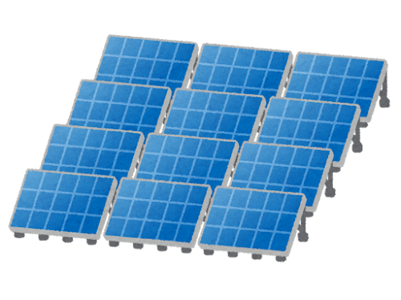
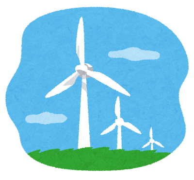
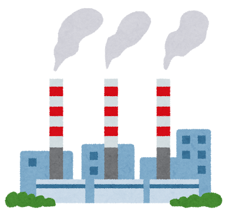
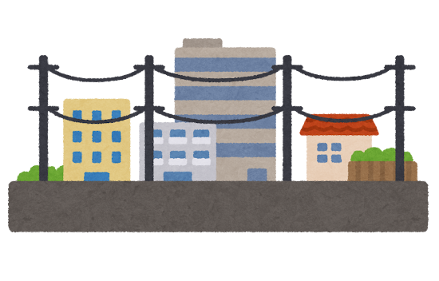

電力同時同量シュミレーター
電力の同時同量とは、「電力をつくる量（供給）と消費する量（需要）を、同じタイミングで常に一致させる」原則を指します。
電気はつくった瞬間に消費されなければならず、基本的に貯蔵は困難です。この供給と需要のバランスが崩れると、大規模停電につながりかねません。
「太陽光発電」「風力発電」それぞれの特徴を踏まえ、火力発電所に適切な出力指令を出すことで、電力の同時同量を実現しましょう！
環境条件
天気は「晴れ、曇り、雨」、風量は「強風、そよ風、無風」、季節は「春、夏、秋、冬」のいずれかがランダムに表示されます。それぞれの場面に応じた、最適な火力発電出力を考えてみましょう！
火力発電量調節